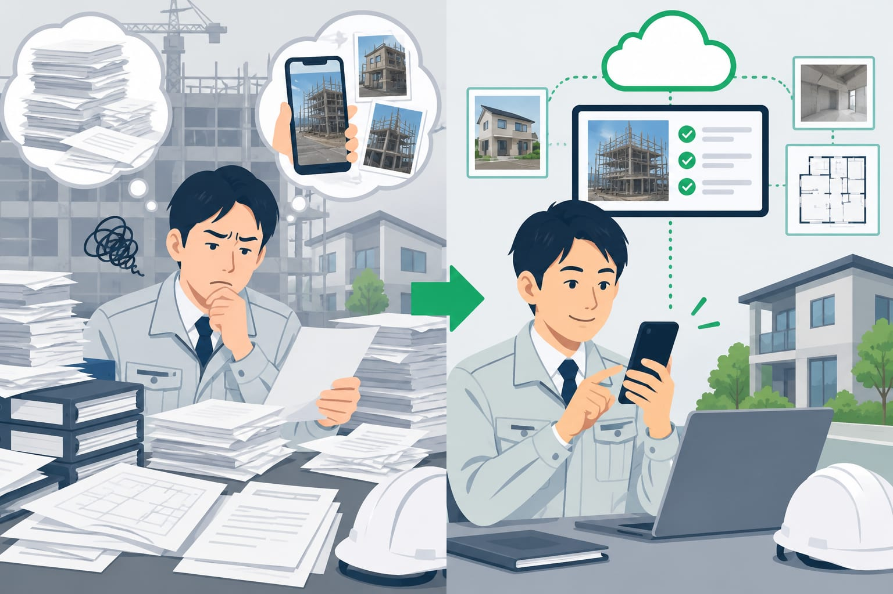
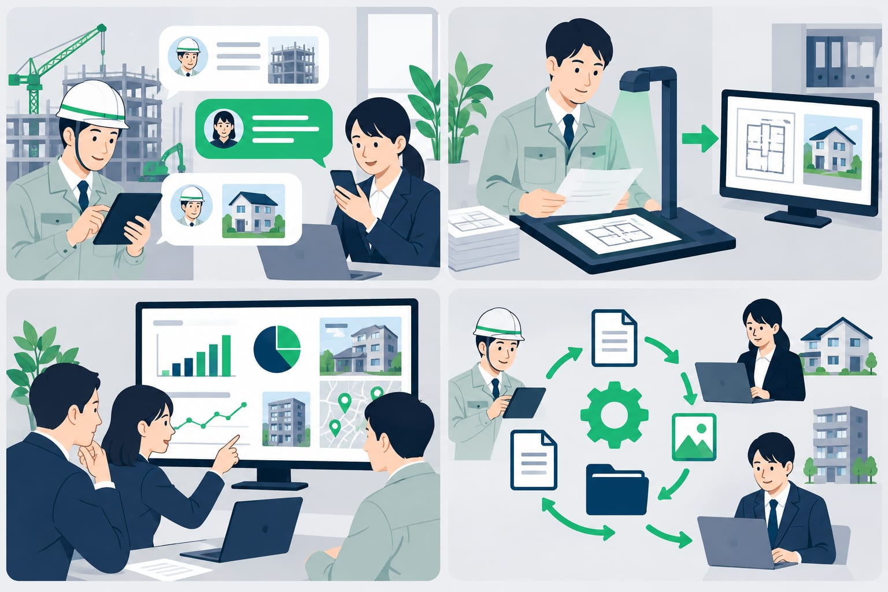
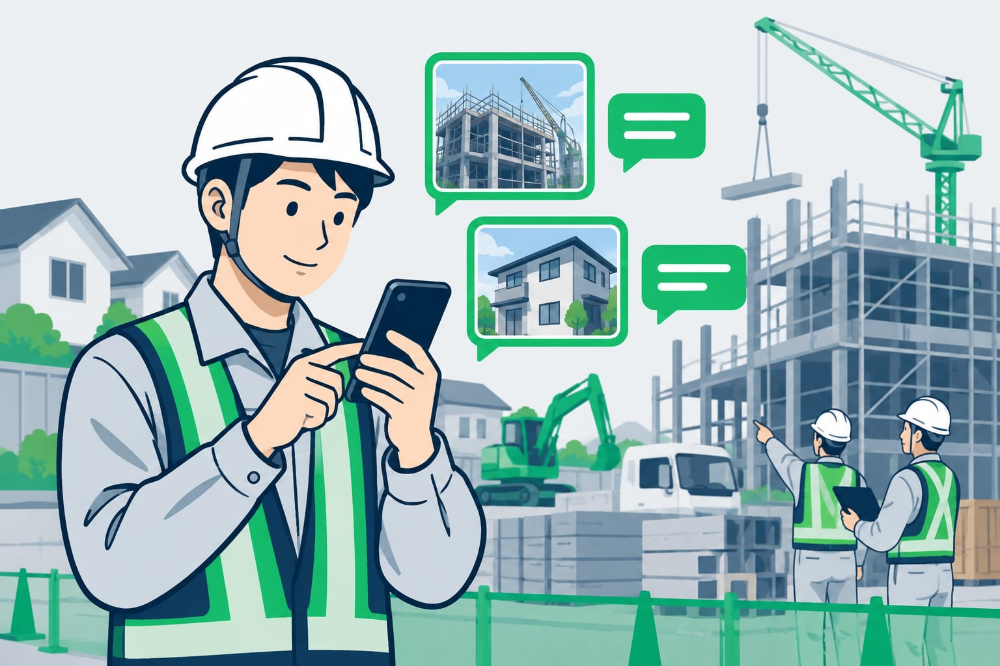

AIシステムの選び方 建設業で失敗しない確認点とLINE条件
チャットAI、OCR、業務システム、自動化ツール。名前だけで選ぶと、現場が使わないまま終わりがちです。この記事では、中小建設業がAIシステムを選ぶときに、LINEで使えるか、既存Excelに合うか、費用や助成金をどう見るかを具体的に整理します。

この記事の要点
- 減らす二度手間から選ぶ
- 入口はLINEだと現場が楽
- 既存Excelに合わせる
- 人の確認を必ず残す
- 費用と助成金を同時確認
建設業のAIシステムの選び方は二度手間から決める

AIシステムは、機能名から選ぶと迷います。チャットAIがよいのか、OCRがよいのか、業務システムがよいのか。先に見るべきなのは、現場と事務所で起きている二度手間です。
たとえば、現場で撮った写真を事務所で探す。手書きメモを日報に打ち直す。見積の内容を請求書にまた入力する。このような作業が、AIシステムの入口になります。
まず、次の3つを書き出してください。
- 現場で発生している情報
- 事務所で作っている書類
- 同じ内容を打ち直している場所
1日1回以上ある作業から選ぶと、効果が見えやすくなります。反対に、年に数回しかない作業から始めると、便利さを感じにくいです。
チャットAI、OCR、業務システム、自動化ツールの違い

AIシステムには、いくつかの種類があります。どれが上かではありません。どの手間を減らしたいかで、向き不向きが変わります。
| 種類 | 得意なこと | 注意点 |
|---|---|---|
| チャットAI | 文章の下書き、要約、言い換え | 帳票への反映は別の仕組みが必要 |
| OCR | 紙、PDF、写真から文字を読む | 読んだ後の確認と修正が必要 |
| 業務システム | 見積、請求、台帳を管理する | 現場入力が重いと使われにくい |
| 自動化ツール | アプリ間の転記を減らす | 元データが乱れると動きにくい |
OCRは、画像やPDFから文字を読み取る技術です。ただし、読み取っただけでは仕事は終わりません。見積書、日報、台帳にどうつなぐかまで見ます。
中小建設業では、組み合わせが現実的です。LINEで写真やメモを集め、AIが下書きを作り、最後に人が確認してExcelや台帳へ反映する形です。
現場が使える条件はLINEから送れること

AIシステムを入れても、現場が入力しなければ動きません。新しいアプリを開く、IDを探す、画面の項目を埋める。この手間があると、移動中や夕方の忙しい時間には後回しになります。
LINEから使えるAIシステムなら、いつものトークに近い形で始められます。写真を送る。短いメモを送る。音声入力で内容を残す。現場にとっては、この差が大きいです。
DX職人では、LINEに送られた写真やメモをもとに、日報の下書きや見積メモを作る形を想定できます。詳しい始め方は、LINE業務改善を建設業で始める方法と見積日報写真の整理でも解説しています。
確認したい条件は、次の通りです。
- 写真とメモを同じトークで送れるか
- 返答がLINEに戻ってくるか
- 事務所側が一覧で確認できるか
- 入力漏れがあればAIが聞き返せるか
既存Excelや台帳を変えずに合わせられるかを見る
小さな建設会社では、すでに使い慣れたExcelや台帳があります。見積書の書式、請求書の控え、現場別の一覧表などです。AIシステムのために全部を変えると、かえって負担が増えることがあります。
選ぶときは、今の帳票に合わせられるかを確認します。項目名、現場名、取引先名、単価の見方が合うか。Excel出力やCSV出力ができるか。ここが合わないと、最後に人がまた直すことになります。
特に見積と請求は、会社ごとの書き方があります。AIがきれいな文章を作っても、いつもの書式に入らなければ実務では使いにくいです。
よいAIシステムは、会社のやり方をすべて捨てさせません。今あるExcelや台帳に、AIの下書きを流し込める形を考えます。
AIシステム導入の失敗を防ぐ確認ポイント
AIシステム導入で多い失敗は、目的が広すぎることです。最初から全部を自動化しようとすると、現場も事務所も確認することが増えます。まずは、日報、見積、写真整理、請求のどれかに絞ります。
導入前に、次の点を確認してください。
- 実際の書類や写真で試せるか
- AIが作った案を人が確認できるか
- 間違いが出たときに修正しやすいか
- 誰が送った情報か分かるか
- 使わない機能に費用が乗っていないか
AIの答えを、そのまま確定する仕組みはおすすめしません。見積金額、請求内容、顧客への返信は、人の確認を残すべきです。
AIは、下書きと整理が得意です。最終判断は社長や担当者が行う。この役割分担にすると、失敗しにくくなります。
費用と助成金・補助金は同時に確認する
AIシステムの費用は、月額利用料だけではありません。初期設定、帳票の調整、既存データの整理、運用中の修正費用も見ます。安く見えても、自社の書式に合わないと追加作業が増えます。
費用の考え方は、AIシステム導入費用の相場と中小建設業の助成金・補助金活用でも詳しくまとめています。見積を比較するときは、機能名ではなく、どの二度手間が減るかで見てください。
助成金・補助金は、AIシステム導入に使える場合があります。たとえば、IT導入補助金は、対象となるITツールや事業者の条件を最新の公募要領で確認する必要があります。
2026年11月3日時点でも、制度の内容、金額、率、締切は年度や公募回で変わります。制度ごとに要件があるので、ご相談の際に確認します。発注前に確認が必要な場合もあるため、早めの確認が安全です。
情報管理は入れてよい情報を先に決める
建設業のAI活用では、情報管理も大事です。見積金額、原価、顧客名、住所、電話番号、図面、契約条件など、外に出したくない情報があります。
AIシステムを選ぶときは、何を入力してよいかを先に決めます。すべてを入れる必要はありません。現場名を略称にする、個人名を伏せる、金額は担当者だけが扱う、という分け方もできます。
確認したい項目は、保存場所、閲覧権限、削除方法、AIの学習への利用有無、操作の記録です。社長だけが見る情報と、現場全員が見る情報は分けるべきです。
入力してよい情報の考え方は、AIに入力してよい情報、避けたほうがよい情報で整理しています。迷う情報は、最初からルールを作っておくと安心です。
小さく始めるなら日報か見積の下書きが向いている
最初に選ぶなら、日報か見積の下書きが向いています。どちらも毎日のように発生し、現場と事務所の間で情報が行き来するからです。
たとえば、現場からLINEに次のように送ります。
- A邸、外壁下塗り完了
- 写真3枚
- 明日は養生と上塗り予定
- 材料が残り少ない
AIシステムは、この内容から日報の下書き、写真説明、明日の予定、確認事項を整理します。事務所はゼロから書かずに、内容を見て直すだけに近づきます。
見積でも同じです。現場メモや過去の書式をもとに、項目案を作ります。単価や数量は人が確認します。AIは作成を助け、人が最終確認する形です。
DX職人は、LINEを入口にして、現場のメモや写真をAIシステムにつなげる考え方です。大きく変える前に、まず一つの二度手間を減らせるかを確認するのが現実的です。
よくある質問
建設業でAIシステムを選ぶ最初の基準は何ですか？
最初は機能名ではなく、日報、見積、写真整理、請求のどの二度手間を減らすかで選びます。毎日発生する作業から始めると、現場と事務所の効果を確認しやすくなります。
LINEで使えるAIシステムは何が便利ですか？
現場が新しい画面を覚えず、写真やメモをいつものLINEから送れる点です。AIの返答もLINEに戻れば、移動中や作業後でも入力しやすくなります。
AIシステム導入でよくある失敗は何ですか？
最初から全部を自動化しようとすることです。実際の書類で試さずに決める、既存Excelに合わない、人の確認を残さない場合も失敗につながりやすいです。
AIシステムの導入に助成金や補助金は使えますか？
使える場合があります。ただし、制度の内容、対象経費、申請時期は年度や公募回で変わります。最新の公募要領を確認し、発注前に相談することが大切です。
AIに見積や顧客情報を入れても大丈夫ですか？
入力してよい情報を先に決める必要があります。顧客名、住所、原価、契約条件などは扱いを分け、保存場所や閲覧権限、削除方法も確認してください。